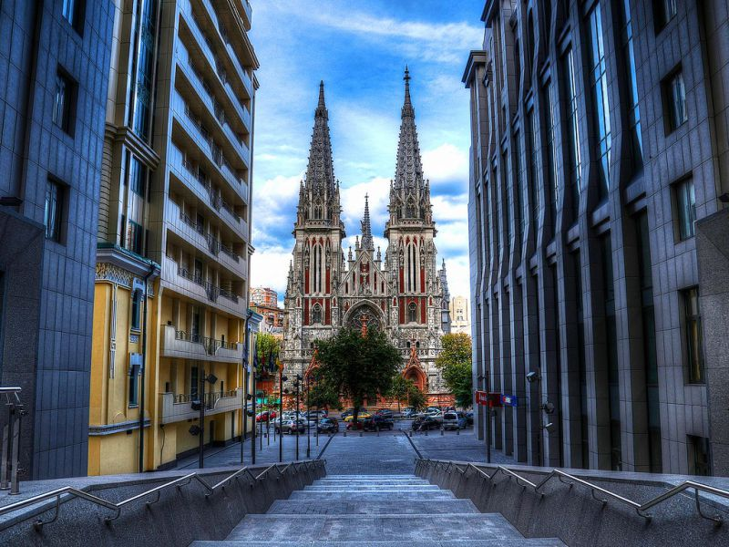
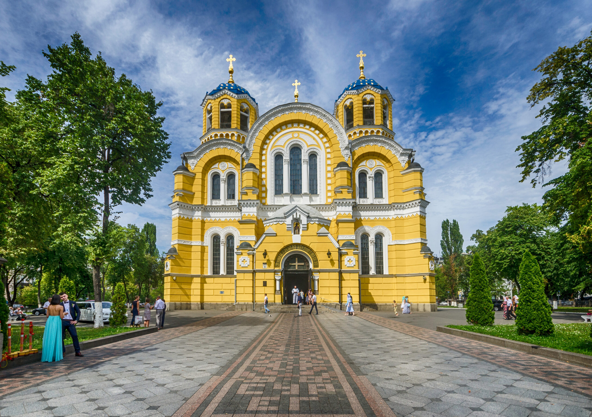
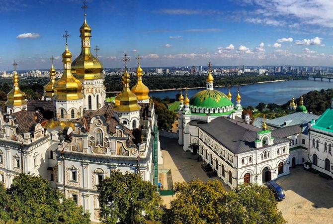
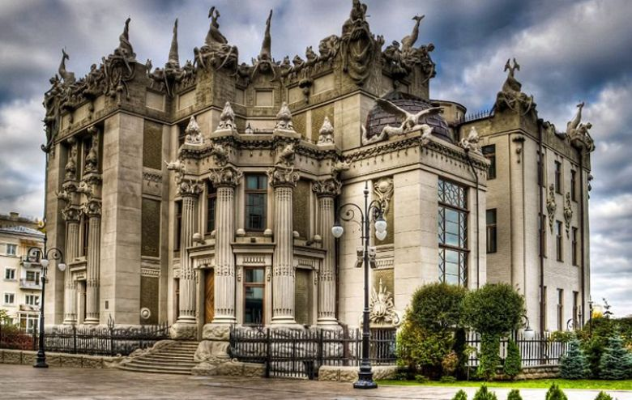
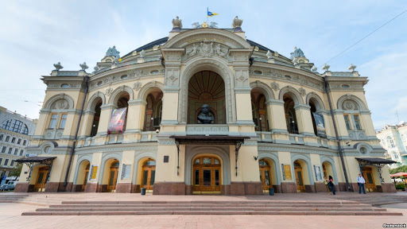
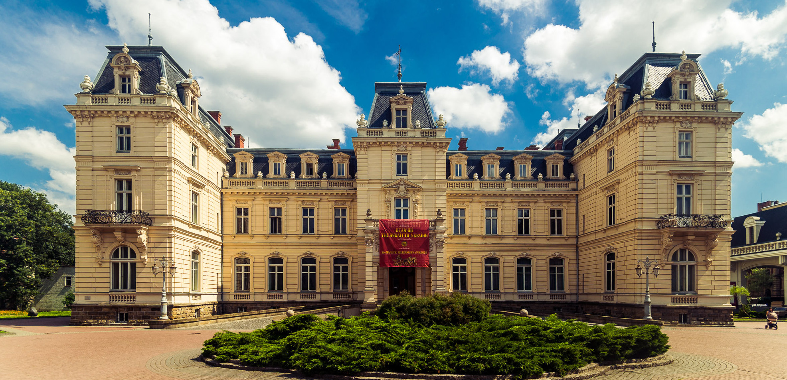
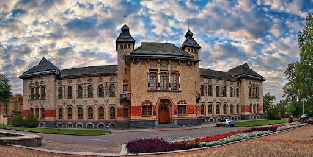

На сучасній українській сцені представлені майже всі музичні напрями: від фолку до acid джазу. Активно розвивається клубна культура. Багато українських поп-виконавців - KAZKA, The Hardkiss, Олександр Пономарьов, Jerri Heil, ВІА Гра, Руслана, Ані Лорак, Надія Грановська-Мейхер, Світлана Лобода, Віра Брежнєва, Вєрка Сердючка - давно здобули популярність за межами України, особливо в СНД. Популярна музика представлена на фестивалях "Червона рута", "Таврійські ігри", "Чайка" та інших.
Рок-музика
Українська рок-музика теж у повному розквіті. Серед найбільш відомих груп - "Океан Ельзи", "Воплі Відоплясова", "Танок на майдані Конго", "Крихітка Цахес", "Скрябін", "Тартак", "Плач Єремії", "Кому Вниз", "Бадло", "Lama" (Лама). Регулярно проводяться українські рок-фестивалі "Рок-екзистенція", "Тарас Бульба" та інші.
Джаз
Представлено на Україні і мистецтво джазу - міжнародні фестивалі джазової музики проходять у різних містах країни, серед них найбільш відомі - Jazz Bez та Jazz Koktebel. Значний внесок у популяризацію джазового руху в Україні внесли Володимир Симоненко та Олексій Коган.
Музика з фольклорними мотивами
Тенденція використання фольклору сучасними українськими виконавцями стає все виразніше. Однією з перших народні мотиви у рок-музиці почала використовувати в другій половині 1980-х років група "Воплі Відоплясова". Спираючись на фольклорну основу, нову самобутню музику створюють групи "Скрябін", "Мандри", "GoA", "Гайдамаки", виконавці Тарас Чубай, Марія Бурмака та багато інших.
Реп-культура
Також активно зараз розвивається українська реп-культура. Одними з яскавих пердстаників є Krechet, Otoy, Freel, паліндром, Alina Pash, Kalush, Yarmak, Tricky Nicky, alyona alyona
Українські народні пісні
Як виникає справжня народна українська пісня? Спочатку слова й музика ллються з серця одного автора, потім їх підхоплюють десятки, сотні вуст. Мелодія змінюється, слова варіюються, а першоджерела творів про маму, кохання, біль, героїчні подвиги губиться у далекому історичному минулому. Залишається тільки весела або сумна мелодія, щира, правдива, просякнута духом простих людей.
Поезія
Представляємо до вашої уваги найкращих українських поетів та їх поеми.
Ліна Костенко – Крила
А й правда, крилатим ґрунту не треба. Землі немає, то буде небо. Немає поля, то буде воля. Немає пари, то будуть хмари. В цьому, напевно, правда пташина… А як же людина? А що ж людина? Живе на землі. Сама не літає. А крила має. А крила має! Вони, ті крила, не з пуху-пір'я, А з правди, чесноти і довір'я. У кого – з вірності у коханні. У кого – з вічного поривання. У кого – з щирості до роботи. У кого – з щедрості на турботи. У кого – з пісні, або з надії, Або з поезії, або з мрії. Людина нібито не літає… А крила має. А крила має!
Микола Вороний – Блакитна Панна
Має крилами Весна Запашна, Лине вся в прозорих шатах, У серпанках і блаватах... Сяє усміхом примар З-поза хмар, Попелястих, пелехатих.
Ось вона вже крізь блакить Майорить, Довгождана, нездоланна... Ось вона — Блакитна Панна!.. Гори, гай, луги, поля — Вся земля Їй виспівує: "Осанна!"
А вона, як мрія сну Чарівна, Сяє вродою святою, Неземною чистотою, Сміючись на пелюстках, На квітках Променистою росою. І уже в душі моїй В сяйві мрій В’ються хмелем арабески, Миготять камеї, фрески, Гомонять-бринять пісні Голосні І сплітаються в гротески.
Іван Франко – Ой ти, дівчино, з горіха зерня
Ой ти, дівчино, з горіха зерня, Чом твоє серденько – колюче терня? Чом твої устонька – тиха молитва, А твоє слово остре, як бритва? Чом твої очі сяють тим чаром, Що то запалює серце пожаром? Ох, тії очі темніші ночі, Хто в них задивиться, й сонця не хоче! І чом твій усміх – для мене скрута, Серце бентежить, як буря люта? Ой ти, дівчино, ясная зоре! Ти мої радощі, ти моє горе! Тебе кидаючи, любити мушу, Тебе кохаючи, загублю душу.
Тарас Шевченко – Заповіт
Як умру, то поховайте Мене на могилі, Серед степу широкого, На Вкраїні милій, Щоб лани широкополі, І Дніпро, і кручі Було видно, було чути, Як реве ревучий. Як понесе з України У синєє море Кров ворожу... отойді я І лани, і гори — Все покину і полину До самого бога Молитися... а до того Я не знаю бога. Поховайте та вставайте, Кайдани порвіте І вражою злою кров'ю Волю окропіте. І мене в сем'ї великій, В сем'ї вольній, новій, Не забудьте пом'янути Незлим тихим словом.
Архітектура
Архітектурна традиція на теренах України пройшла довгий історичний шлях розвитку. Є ще багато фортець, будівель, які зараз ще можна реконструювати, а є й такі, без яких ідентифікувати Україну неможливо. Ми зібрали невелику підзбірку архітектурних пам'яток.
Костел Святого Миколая в Києві

Володимирський Собор у Києві

Києво-печерська лавра в Києві

Будинок з химерами в Києві

Сокиринський палац в Чернігівській областіНаціональна опера України імені Тараса Шевченка в центрі Києва

Палац Потоцького в Львові

Полтавський краєзнавчий музей
